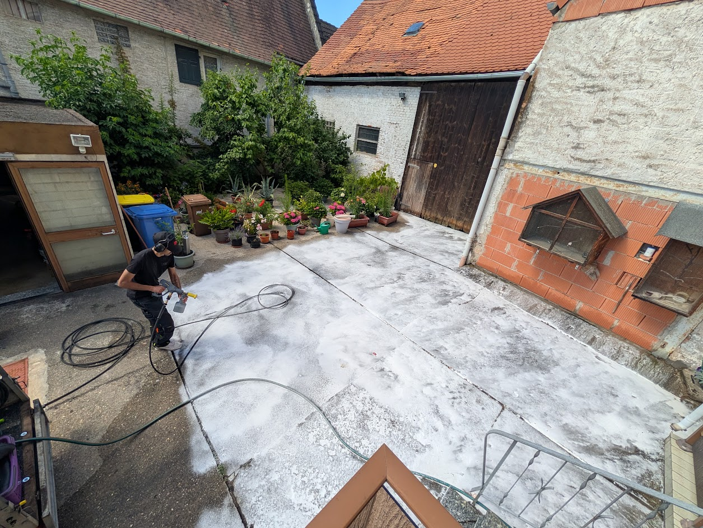
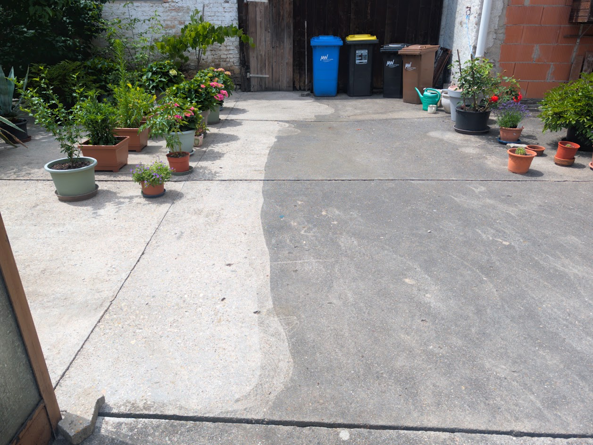
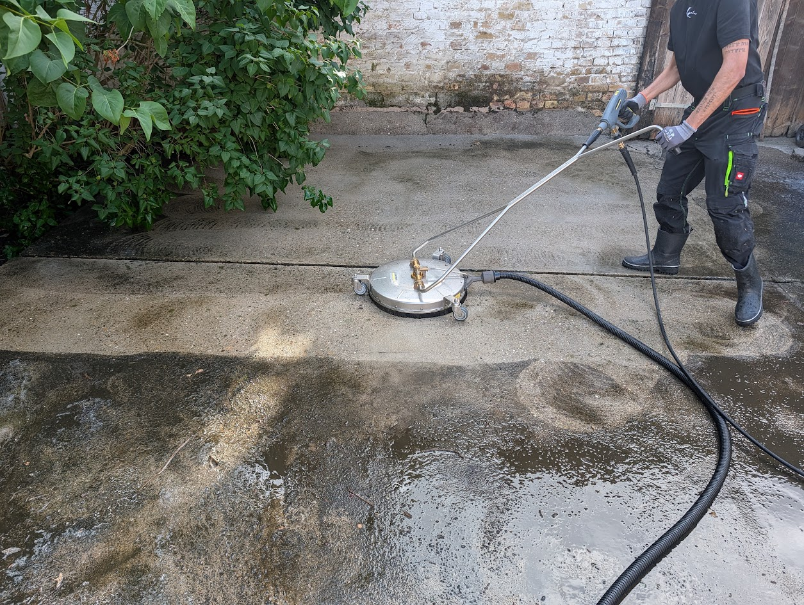
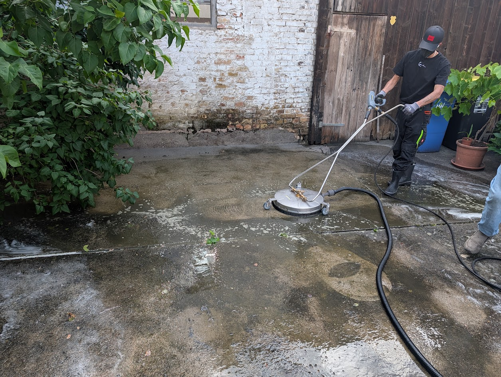
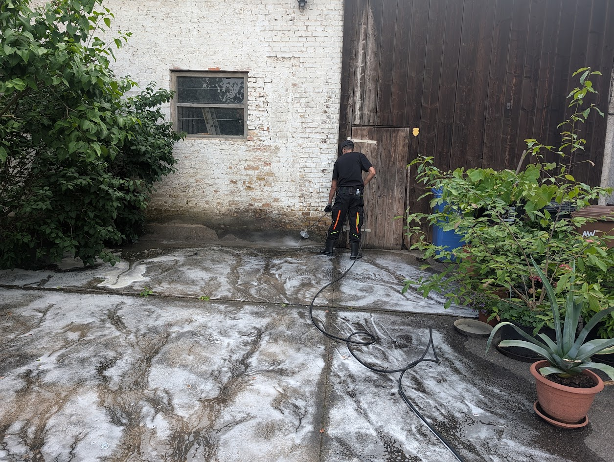
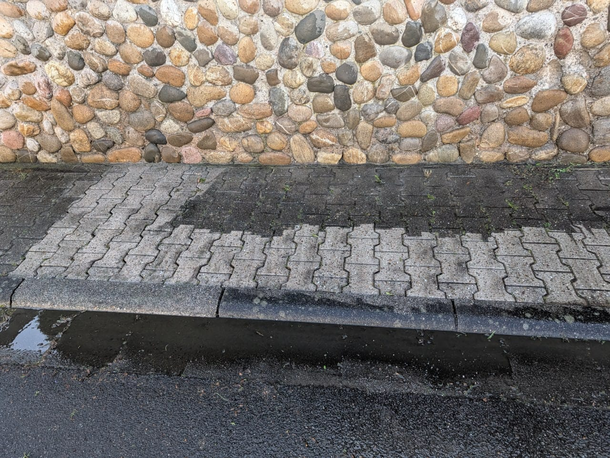

01
Pflasterreinigung
Hofeinfahrten, Wege, Terrassen und Pflasterflächen werden tiefenwirksam gereinigt und optisch aufgewertet.
Wir entfernen Schmutz, Algen, Moos und Ablagerungen gründlich und materialschonend – für saubere Flächen, einen starken ersten Eindruck und langfristigen Werterhalt.
Vom Privathaus bis zur Gewerbefläche – wir reinigen gründlich, professionell und zuverlässig.
Hofeinfahrten, Wege, Terrassen und Pflasterflächen werden tiefenwirksam gereinigt und optisch aufgewertet.
Für Fassaden, Mauern und Außenbereiche – sauber, materialschonend und auf den Untergrund abgestimmt.
Ideal für Tiefgaragen, Parkhäuser und stark beanspruchte Flächen im gewerblichen Einsatz.
Auf Wunsch mit passender Materialkalkulation für eine saubere, langlebige und gepflegte Gesamtfläche.
Reale Flächen und sichtbare Ergebnisse – automatisch und ohne manuelles Durchklicken.






Ziehe den Regler nach links oder rechts und vergleiche reale Ergebnisse direkt auf der Fläche.
Klare Kommunikation, sichtbare Ergebnisse und ein professioneller Auftritt – genau darauf legen wir Wert.
Damit du das Ergebnis und die Reinigungswirkung direkt vor Ort beurteilen kannst.
Kurze Wege, saubere Planung und eine zügige Umsetzung ohne langes Warten.
Transparente Einschätzung statt unklarer Pauschalen – auf Wunsch direkt über den Preisrechner.
Ob privat oder gewerblich: Gepflegte Flächen sorgen für einen starken ersten Eindruck.
So bewerten Kunden unsere Arbeit.
„Ich entdeckte die Firma Pflasterlux. Vom ersten Kontakt bis zur Ausführung hochmotiviert, freundlich und professionell. Das Ergebnis ist wirklich beeindruckend.“
„Richtig gute Leistung und ein tolles Team. Von der Auftragsklärung bis zur Durchführung super zufrieden. Das wird bestimmt nicht der letzte Auftrag gewesen sein.“
„Super freundlicher Kontakt, tolle Beratung, zuverlässig und klasse Arbeit. Ganz klare Weiterempfehlung – ich freue mich schon auf den Sommer auf der ‚alten neuen‘ Terrasse.“
„Kompetent, pünktlich und sauber gearbeitet. Gerade bei unserer Einfahrt hat man den Unterschied sofort gesehen. Sehr angenehme Zusammenarbeit.“
In wenigen Minuten zur realistischen Kostenschätzung für Terrasse, Einfahrt & Co. – inklusive Materialbedarf für Neuverfugung. Kostenlos und unverbindlich.
Maße eingeben, Fläche und Zustand auswählen – du bekommst direkt eine transparente Kostenübersicht.
Wir berechnen die benötigte Materialmenge direkt mit – damit dein Angebot realistisch bleibt.
Das hängt von Fläche, Verschmutzung und Zugänglichkeit ab. Kleinere Flächen sind oft in wenigen Stunden erledigt, größere Objekte planen wir sauber im Voraus ein.
Ja. Wir arbeiten material- und umweltschonend und setzen nur dort Reinigungsmittel ein, wo sie wirklich sinnvoll sind.
Ja, über das Kontaktformular kannst du jetzt Bilder der zu reinigenden Fläche hochladen. Das erleichtert die erste Einschätzung deutlich.
Nein. Der Preisrechner dient als erste Orientierung. Das finale Angebot hängt immer von Fläche, Zustand und individuellen Anforderungen ab.
Schick uns deine Anfrage direkt über das Formular. Wenn du möchtest, kannst du Bilder der Fläche direkt mitsenden.